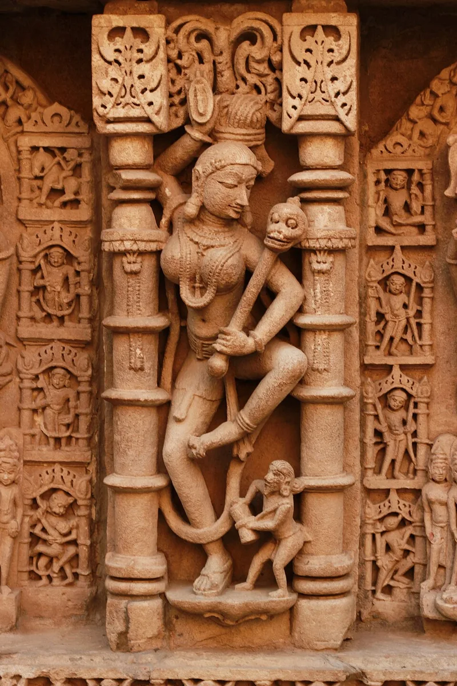

Rani ki Vav stepwell
Descend seven terraces in a schematic section of the stepwell. Track your level and compare the site photograph.
Inspect source image

Descend seven terraces in a schematic section of the stepwell. Track your level and compare the site photograph.
